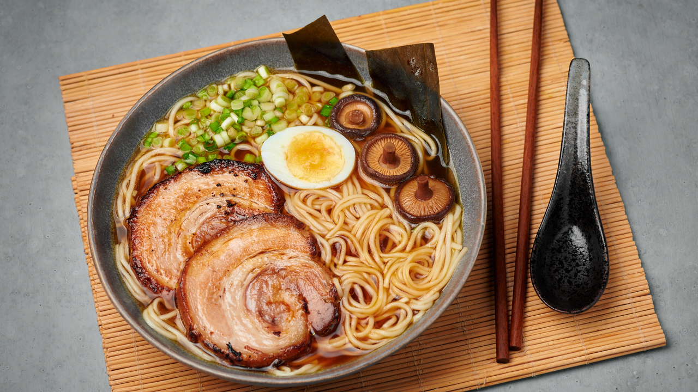

Pork Ramen

Description
Ramen has become one of the most popular asian foods besides sushi. In this page we are able to see a step by step guide on how to cook it.
Ingredients
For 4 people
- 1 leek
- 1 onion
- 2 carrots
- 500g of chicken bones
- 500g of pork bones
- 2l of water
- 8 garlic cloves
- 6 slices of fresh ginger
- 8 shitake mushrooms
- 400g of pork belly
- 400g of ramen noodles
- 1 green onion
- 4 eggs
- 4 pieces of nori algae
- 300ml of soy sauce
- 150ml of sake
- 150ml of mirin (rice wine)
- 4 pieces of kombu algae
Steps
- The first step is to boil the eggs in water with a splash of vinegar during 6 mins and keep mixing for the whole time to keep the yolk centered.
- Prepare a small pot with 200ml of soy sauce, 150ml of mirin, 150ml of sake, 4 chopped garlic cloves, 2 table spoons of sugar, 3 slices of ginger and a leek leave. Heat it up untill it starts boiling and then turn the heating off.
- Peel the eggs and let them marinate together with the pork belly for 1 or 2 hours in the small pot.
- Boil the bones 5 mins to take out impurities, and then rinse with water.
- Sear the pork belly on each side in a big pot, where we are gonna cook the broth and set the grease aside.
- Put the leek together with the onion, 4 garlic cloves, all the bones, the 2 carrots, two table spoons of soy sauce, the shitake mushrooms, the pork belly and 2l of water. Let it boil for at least 2 hours.
- Soak the Kombu algae in soy sauce for at least 30 mins.
- Once the broth is done, filtrate it and reserve the shitake mushrooms and the pork belly for later.
- Boil the ramen noodles as the packaging indicates and add them into the plates together with the broth.
- Cut the eggs into 2 pieces each, the pork belly into 4 or 8 slices, chop the green onion and slice the mushrooms.
- Plate all these ingredients on top of the noodles and add the two algaes to finish the recipe.
Home